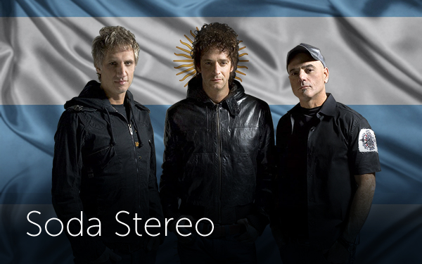
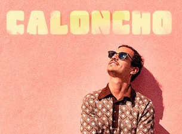

I do love music; my favorites band and artist are:

Soda Stereo was an Argentine rock band created in Buenos Aires in 1982
by the power trio made up of Gustavo Cerati, Héctor "Zeta" Bosio, and Charly Alberti

Óscar Alfonso Castro, better known as Caloncho, is a Mexican musician and singer